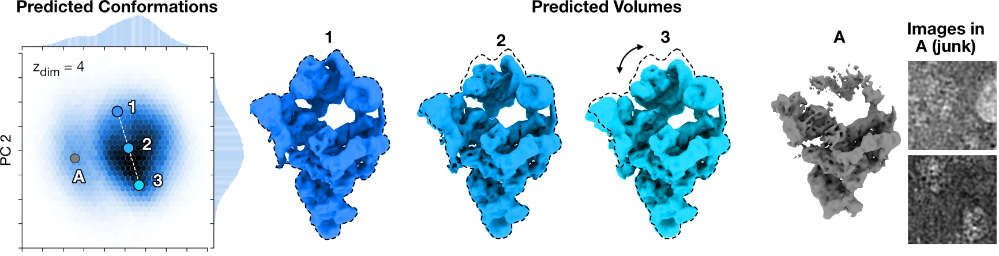
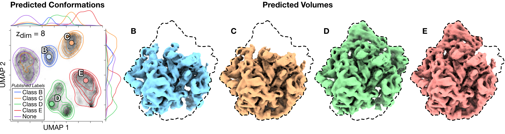
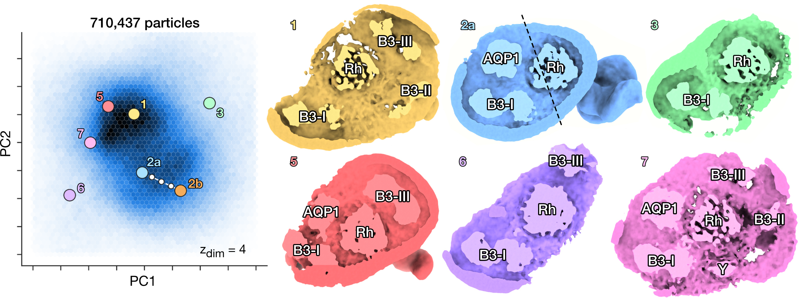

Results
Pre-catalytic Spliceosome (EMPIAR-10180 [1])
DRGN-AI reconstructs the continuous bending motion of the pre-catalytic spliceosome while clustering a set of particle images corresponding to broken or denatured density maps in the latent space. A histogram of the two first principal components of the predicted conformations is shown. . Density maps 1-3 show a continuous bending motion of the molecule. An outlier cluster resembling broken or junk particles and two randomly selected particles images from that cluster. Dashed lines indicate outlines of the extended spliceosome.
[1] Plaschka, C., Lin, P. C., & Nagai, K. (2017). Structure of a pre-catalytic spliceosome. Nature, 546(7660), 617-621.
Assembling Bacterial Large Ribosomal Subunit (EMPIAR-10076 [2])
DRGN-AI recovers the compositional heterogeneity in the assembly states of the bacterial large ribosomal subunit, while also grouping previously unclassified and discarded particles in the latent space. Conformations are embedded in a two-dimensional space with UMAP. The distribution of the published labels is shown in this space with a Gaussian kernel density estimation (KDE) and four of the maps obtained by 𝑘-means clustering (𝑘 = 6). Dashed lines indicate outlines of the fully mature 50S ribosome.
[2] Davis, J. H., Tan, Y. Z., Carragher, B., Potter, C. S., Lyumkis, D., & Williamson, J. R. (2016). Modular assembly of the bacterial large ribosomal subunit. Cell, 167(6), 1610-1622.
SARS-CoV-2 Spike [3]

DRGN-AI reconstructs both the closed and open states of the spike protein fully ab initio and resolve the conformational change of the receptor binding domain. Predicted conformations are clustered with 𝑘-means and the distribution of two first principal components of each cluster is approximated with Gaussian KDE. Two sampled density maps correspond to the closed and open states of the receptor binding domain (RBD) with docked atomic models (PDB:6VXX, PDB:6VYB).
[3] Walls, A. C., Park, Y. J., Tortorici, M. A., Wall, A., McGuire, A. T., & Veesler, D. (2020). Structure, function, and antigenicity of the SARS-CoV-2 spike glycoprotein. Cell, 181(2), 281-292.
DSL1/Snare Complex [4]
DRGN-AI ab initio reconstruction of a highly heterogeneous dataset of the DSL1/SNARE complex. The trajectory was generated by simulating a brownian motion in the PC1/2 space, biased towards the origin with a harmonic potential.
[4] DAmico, K. A., Stanton, A. E., Shirkey, J. D., Travis, S. M., Jeffrey, P. D., & Hughson, F. M. (2024). Structure of a membrane tethering complex incorporating multiple SNAREs. Nature Structural & Molecular Biology, 1-9.
Ankyrin Supercomplex [5]
Heterogeneous reconstruction of the human erythrocyte ankyrin-1 complex and identification of a new “supercomplex” state. PCA on the latent space of predicted conformations and sampled density maps from their corresponding location in latent space. Conformations can be distinguished according to micelle composition. The six classes from Vallese et al. [5] (1 to 6) are recovered. DRGN-AI also reveals the presence of a new “supercomplex” state (7), which simultaneously contains the rhesus heterotrimer (Rh), the aquaporin (AQP1), the band 3-I (B3-I), the band 3-II (B3-II), the band 3-III (B3-III) dimers and an unknown protein Y in the micelle. Y could correspond to the unknown protein reported in Vallese et al. [5].
[5] Vallese, F., Kim, K., Yen, L. Y., Johnston, J. D., Noble, A. J., Calì, T., & Clarke, O. B. (2022). Architecture of the human erythrocyte ankyrin-1 complex. Nature structural & molecular biology, 29(7), 706-718.